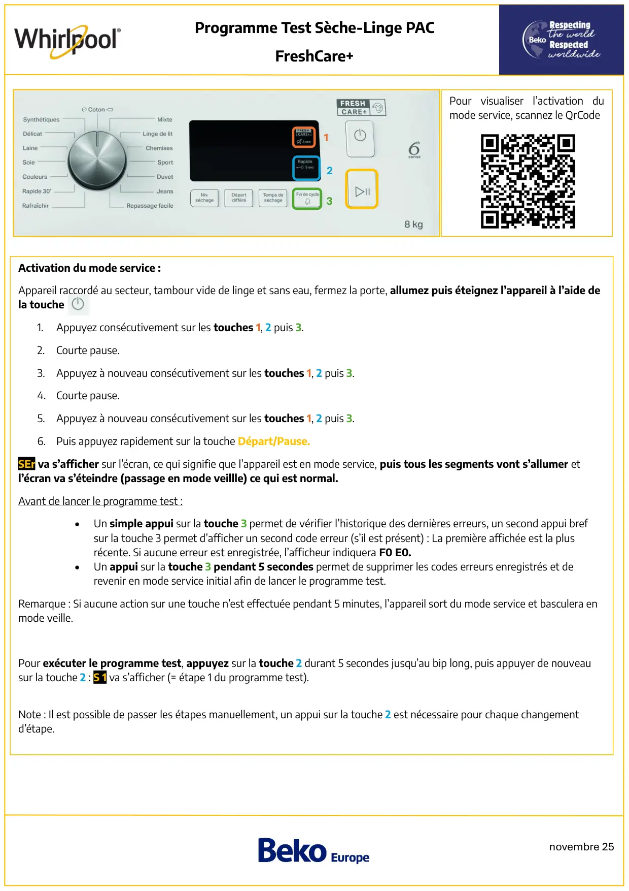
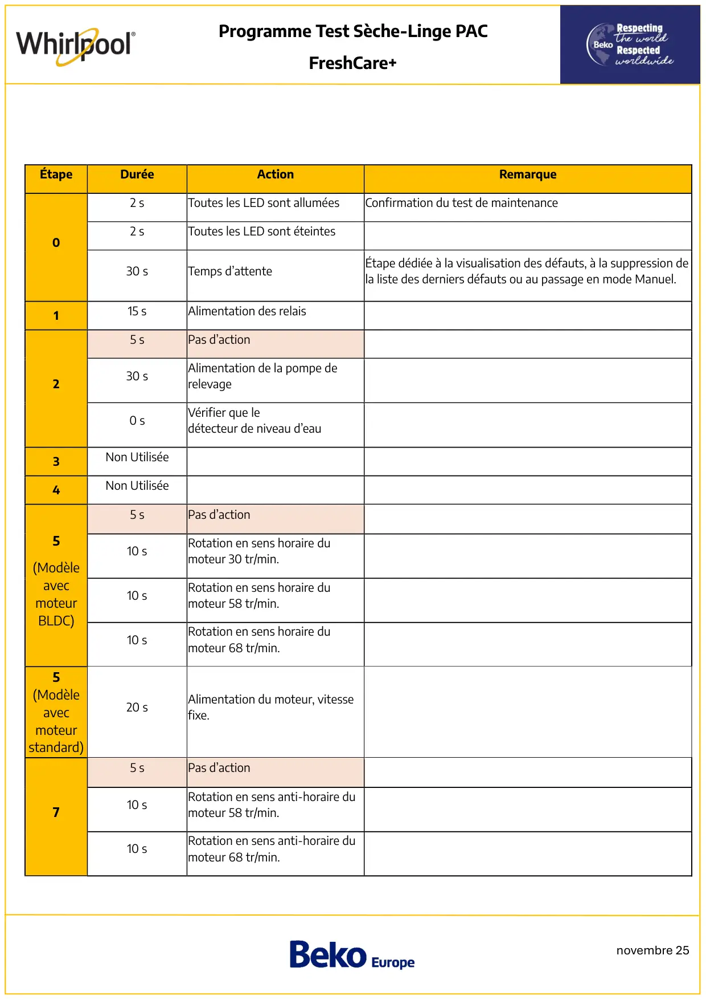
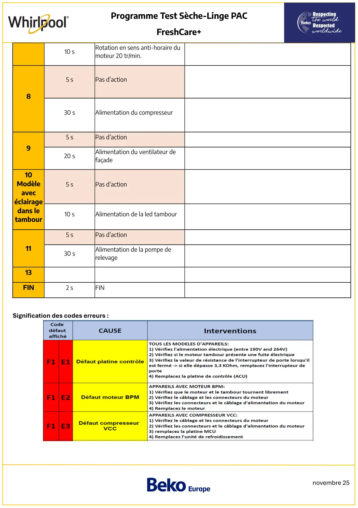
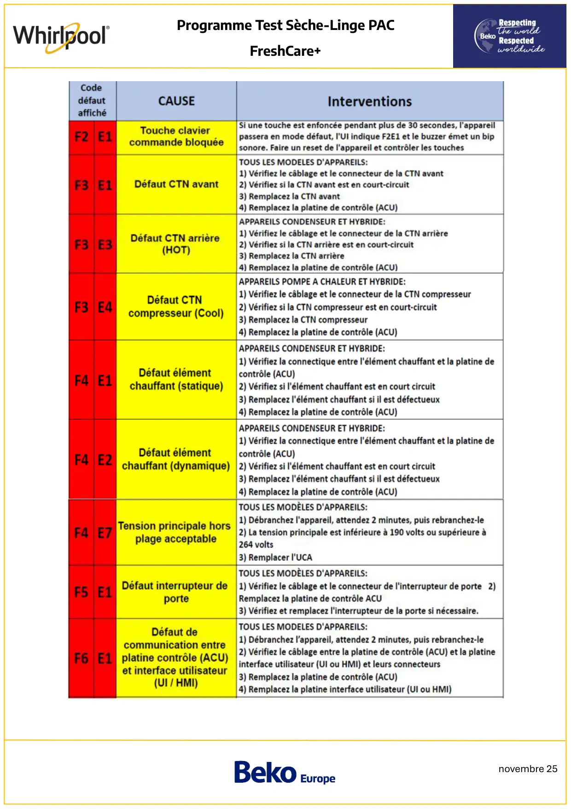
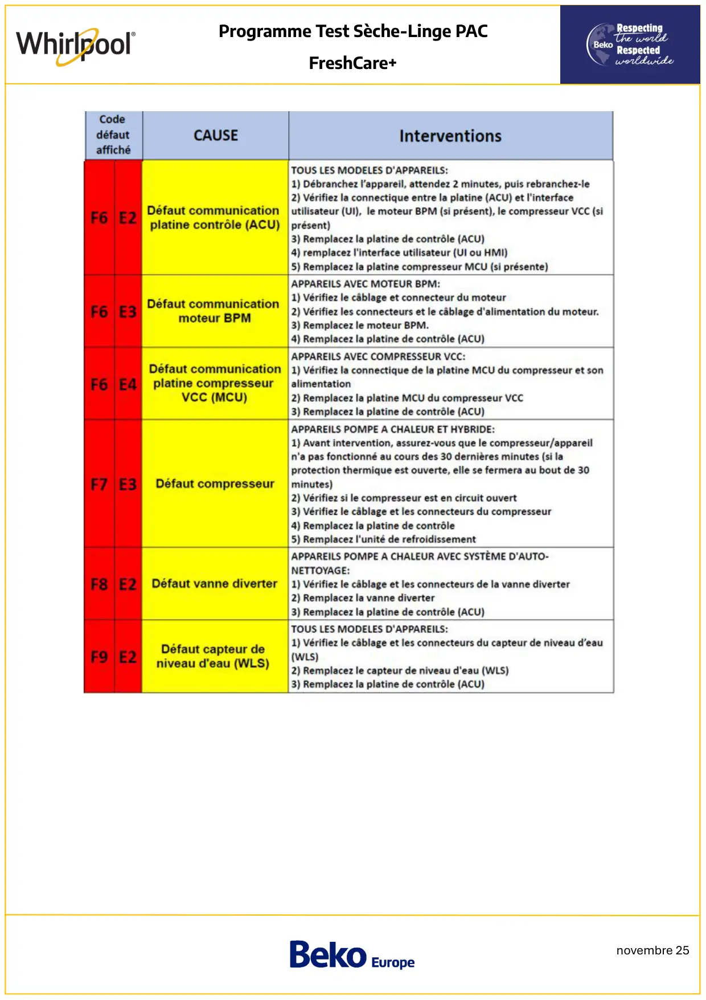

Prog Test seche linge PAC Whirlpool Freshcare+

novembre 25Programme Test Sèche-Linge PACFreshCare+Pour visualiser l’activation dumode service, scannez le QrCodeActivation du mode service :Appareil raccordé au secteur, tambour vide de linge et sans eau, fermez la porte, allumez puis éteignez l’appareil à l’aide dela touche1.Appuyez consécutivement sur les touches 1, 2 puis 3.2.Courte pause.3. Appuyez à nouveau consécutivement sur les touches 1, 2 puis 3.4. Courte pause.5. Appuyez à nouveau consécutivement sur les touches 1, 2 puis 3.6. Puis appuyez rapidement sur la touche Départ/Pause.SEr va s’afficher sur l’écran, ce qui signifie que l’appareil est en mode service, puis tous les segments vont s’allumer etl’écran va s’éteindre (passage en mode veillle) ce qui est normal.Avant de lancer le programme test :•Un simple appui sur la touche 3 permet de vérifier l’historique des dernières erreurs, un second appui brefsur la touche 3 permet d’afficher un second code erreur (s’il est présent) : La première affichée est la plusrécente. Si aucune erreur est enregistrée, l’afficheur indiquera F0 E0.•Un appui sur la touche 3 pendant 5 secondes permet de supprimer les codes erreurs enregistrés et derevenir en mode service initial afin de lancer le programme test.Remarque : Si aucune action sur une touche n’est effectuée pendant 5 minutes, l’appareil sort du mode service et basculera enmode veille.Pour exécuter le programme test, appuyez sur la touche 2 durant 5 secondes jusqu’au bip long, puis appuyer de nouveausur la touche 2 : S 1 va s’afficher (= étape 1 du programme test).Note : Il est possible de passer les étapes manuellement, un appui sur la touche 2 est nécessaire pour chaque changementd’étape.123
1 / 5
novembre 25Programme Test Sèche-Linge PACFreshCare+ÉtapeDuréeActionRemarque02 sToutes les LED sont alluméesConfirmation du test de maintenance2 sToutes les LED sont éteintes30 sTemps d’attenteÉtape dédiée à la visualisation des défauts, à la suppression dela liste des derniers défauts ou au passage en mode Manuel.115 sAlimentation des relais25 sPas d’action30 sAlimentation de la pompe derelevage0 sVérifier que ledétecteur de niveau d’eau3Non Utilisée4Non Utilisée5(ModèleavecmoteurBLDC)5 sPas d’action10 sRotation en sens horaire dumoteur 30 tr/min.10 sRotation en sens horaire dumoteur 58 tr/min.10 sRotation en sens horaire dumoteur 68 tr/min.5(Modèleavecmoteurstandard)20 sAlimentation du moteur, vitessefixe.75 sPas d’action10 sRotation en sens anti-horaire dumoteur 58 tr/min.10 sRotation en sens anti-horaire dumoteur 68 tr/min.
2 / 5
novembre 25Programme Test Sèche-Linge PACFreshCare+10 sRotation en sens anti-horaire dumoteur 20 tr/min.85 sPas d’action30 sAlimentation du compresseur95 sPas d’action20 sAlimentation du ventilateur defaçade10Modèleavecéclairagedans letambour5 sPas d’action10 sAlimentation de la led tambour115 sPas d’action30 sAlimentation de la pompe derelevage13FIN2 sFINSignification des codes erreurs :
3 / 5
novembre 25Programme Test Sèche-Linge PACFreshCare+
4 / 5
novembre 25Programme Test Sèche-Linge PACFreshCare+
5 / 5